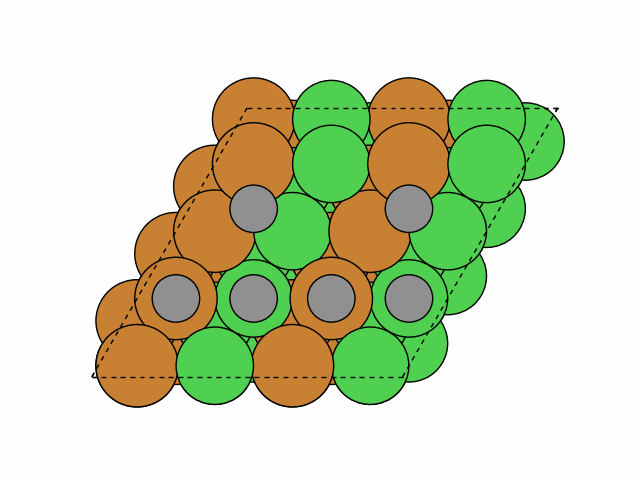

Building things¶
Operate adsorbate¶
The add_adsorbate function¶
Example
To add a NO molecule to a bridge site consists of one Pt and one Ni on the fcc111 surface of a bimetallic truncated octahedron:
>>> from acat.build import add_adsorbate >>> from ase.cluster import Octahedron >>> from ase.visualize import view >>> atoms = Octahedron('Ni', length=7, cutoff=2) >>> for atom in atoms: ... if atom.index % 2 == 0: ... atom.symbol = 'Pt' >>> add_adsorbate(atoms, adsorbate='NO', site='bridge', ... surface='fcc111', composition='NiPt', ... surrogate_metal='Ni') >>> view(atoms)Output:
{kind=link}
The add_adsorbate_to_site function¶
Example1
To add CO to all fcc sites of an icosahedral nanoparticle:
>>> from acat.adsorption_sites import ClusterAdsorptionSites >>> from acat.build import add_adsorbate_to_site >>> from ase.cluster import Icosahedron >>> from ase.visualize import view >>> atoms = Icosahedron('Pt', noshells=5) >>> atoms.center(vacuum=5.) >>> cas = ClusterAdsorptionSites(atoms) >>> fcc_sites = cas.get_sites(site='fcc') >>> for site in fcc_sites: ... add_adsorbate_to_site(atoms, adsorbate='CO', site=site) >>> view(atoms)Output:

Example2
To add a bidentate CH3OH to the (54, 57, 58) site on a Pt fcc111 surface slab and rotate to the orientation of a neighbor site:
>>> from acat.adsorption_sites import SlabAdsorptionSites >>> from acat.adsorption_sites import get_adsorption_site >>> from acat.build import add_adsorbate_to_site >>> from acat.utilities import get_mic >>> from ase.build import fcc111 >>> from ase.visualize import view >>> atoms = fcc111('Pt', (4, 4, 4), vacuum=5.) >>> i, site = get_adsorption_site(atoms, indices=(54, 57, 58), ... surface='fcc111', ... return_index=True) >>> sas = SlabAdsorptionSites(atoms, surface='fcc111') >>> sites = sas.get_sites() >>> nbsites = sas.get_neighbor_site_list(neighbor_number=1) >>> nbsite = sites[nbsites[i][0]] # Choose the first neighbor site >>> ori = get_mic(site['position'], nbsite['position'], atoms.cell) >>> add_adsorbate_to_site(atoms, adsorbate='CH3OH', site=site, ... orientation=ori) >>> view(atoms)Output:

The add_adsorbate_to_label function¶
Example
To add a NH molecule to a site with bimetallic label 14 (an hcp CuCuAu site) on a bimetallic fcc110 surface slab:
>>> from acat.build import add_adsorbate_to_label >>> from ase.build import fcc110 >>> from ase.visualize import view >>> atoms = fcc110('Cu', (3, 3, 8), vacuum=5.) >>> for atom in atoms: ... if atom.index % 2 == 0: ... atom.symbol = 'Au' ... atoms.center() >>> add_adsorbate_to_label(atoms, adsorbate='NH', ... label=14, surface='fcc110', ... composition_effect=True, ... surrogate_metal='Cu') >>> view(atoms)Output:
{kind=link}
The remove_adsorbate_from_site function¶
Example1
To remove a CO molecule from a fcc111 surface slab with one CO and one OH:
>>> from acat.adsorption_sites import SlabAdsorptionSites >>> from acat.adsorbate_coverage import SlabAdsorbateCoverage >>> from acat.build import add_adsorbate_to_site >>> from acat.build import remove_adsorbate_from_site >>> from ase.build import fcc111 >>> from ase.visualize import view >>> atoms = fcc111('Pt', (6, 6, 4), 4, vacuum=5.) >>> atoms.center() >>> sas = SlabAdsorptionSites(atoms, surface='fcc111') >>> sites = sas.get_sites() >>> add_adsorbate_to_site(atoms, adsorbate='OH', site=sites[0]) >>> add_adsorbate_to_site(atoms, adsorbate='CO', site=sites[-1]) >>> sac = SlabAdsorbateCoverage(atoms, sas) >>> occupied_sites = sac.get_sites(occupied_only=True) >>> CO_site = next((s for s in occupied_sites if s['adsorbate'] == 'CO')) >>> remove_adsorbate_from_site(atoms, site=CO_site) >>> view(atoms)
{kind=link}
The remove_adsorbates_from_sites function¶
Example
To remove all CO species from a fcc111 surface slab covered with both CO and OH:
>>> from acat.adsorption_sites import SlabAdsorptionSites >>> from acat.adsorbate_coverage import SlabAdsorbateCoverage >>> from acat.build.adlayer import min_dist_coverage_pattern >>> from acat.build import remove_adsorbates_from_sites >>> from ase.build import fcc111 >>> from ase.visualize import view >>> slab = fcc111('Pt', (6, 6, 4), 4, vacuum=5.) >>> slab.center() >>> atoms = min_dist_coverage_pattern(slab, adsorbate_species=['OH','CO'], ... surface='fcc111', ... min_adsorbate_distance=5.) >>> sas = SlabAdsorptionSites(atoms, surface='fcc111') >>> sac = SlabAdsorbateCoverage(atoms, sas) >>> occupied_sites = sac.get_sites(occupied_only=True) >>> CO_sites = [s for s in occupied_sites if s['adsorbate'] == 'CO'] >>> remove_adsorbates_from_sites(atoms, sites=CO_sites) >>> view(atoms)Output:
{kind=link}
The remove_adsorbates_too_close function¶
Example
To remove unphysically close adsorbates on the edges of a Marks decahedron with 0.75 ML ordered CO coverage:
>>> from acat.build.adlayer import special_coverage_pattern >>> from acat.build import remove_adsorbates_too_close >>> from ase.cluster import Decahedron >>> from ase.visualize import view >>> atoms = Decahedron('Pt', p=4, q=3, r=1) >>> atoms.center(vacuum=5.) >>> pattern = special_coverage_pattern(atoms, adsorbate='CO', ... coverage=0.75) >>> remove_adsorbates_too_close(pattern, min_adsorbate_distance=1.) >>> view(pattern)Output:
Generate adsorbate overlayer patterns¶
The RandomPatternGenerator class¶
Example1
The following example illustrates how to stochastically generate 100 unique adsorbate overlayer patterns with one more adsorbate chosen from CO, OH, CH3 and CHO, based on 10 Pt fcc111 surface slabs with random C and O coverages, where CH3 is forbidden to be added to ontop and bridge sites:
>>> from acat.build.adlayer import RandomPatternGenerator as RPG >>> from acat.build.adlayer import min_dist_coverage_pattern >>> from ase.build import fcc111 >>> from ase.io import read >>> from ase.visualize import view >>> slab = fcc111('Pt', (6, 6, 4), 4, vacuum=5.) >>> slab.center() >>> images = [] >>> for _ in range(10): ... atoms = slab.copy() ... image = min_dist_coverage_pattern(atoms, adsorbate_species=['C','O'], ... surface='fcc111', ... min_adsorbate_distance=5.) ... images.append(image) >>> rpg = RPG(images, adsorbate_species=['CO','OH','CH3','CHO'], ... species_probabilities={'CO': 0.3, 'OH': 0.3, ... 'CH3': 0.2, 'CHO': 0.2}, ... min_adsorbate_distance=1.5, ... surface='fcc111', ... composition_effect=False, ... species_forbidden_sites={'CH3': ['ontop','bridge']}) >>> rpg.run(num_gen=100, action='add', unique=True) >>> images = read('patterns.traj', index=':') >>> view(images)Output:
Example2
The following example illustrates how to generate 20 unique coverage patterns, each adding 4 adsorbates (randomly chosen from H, OH and H2O) onto a fcc100 Ni2Cu surface slab on both top and bottom interfaces (
bulk waterin between) with probabilities of 0.25, 0.25, 0.5, respectively, and a minimum adsorbate distance of 2.5 Angstrom:>>> from acat.build.adlayer import RandomPatternGenerator as RPG >>> from acat.adsorption_sites import SlabAdsorptionSites >>> from ase.io import read >>> from ase.build import fcc100 >>> from ase.visualize import view >>> water_bulk = read('water_bulk.xyz') >>> water_bulk.center(vacuum=11., axis=2) >>> slab = fcc100('Ni', (4, 4, 8), vacuum=9.5, periodic=True) >>> for atom in slab: ... if atom.index % 3 == 0: ... atom.symbol = 'Cu' >>> slab.translate(-slab.cell[2] / 2) >>> slab.wrap() >>> atoms = slab + water_bulk >>> sas = SlabAdsorptionSites(atoms, surface='fcc100', ... composition_effect=True, ... both_sides=True, ... surrogate_metal='Ni') >>> rpg = RPG(atoms, adsorbate_species=['H','OH','OH2'], ... species_probabilities={'H': 0.25, 'OH': 0.25, 'OH2': 0.5}, ... min_adsorbate_distance=2.5, ... adsorption_sites=sas, ... surface='fcc100') >>> rpg.run(num_gen=20, action='add', num_act=4, unique=True) >>> images = read('patterns.traj', index=':') >>> view(images)Output:
Example3
The following example illustrates how to generate 20 random adsorbate overlayer patterns with 5 adsorbates: 1 CO, 2 OH and 2 N, on 10 quaternary cuboctahedral nanoalloys with random chemical orderings. The minimum adsorbate distance is set to 3 Angstrom and duplicate patterns are allowed (very unlikely for nanoparticles):
>>> from acat.adsorption_sites import ClusterAdsorptionSites >>> from acat.build.adlayer import RandomPatternGenerator as RPG >>> from acat.build.ordering import RandomOrderingGenerator as ROG >>> from ase.cluster import Octahedron >>> from ase.io import read >>> from ase.visualize import view >>> atoms = Octahedron('Ni', length=5, cutoff=2) >>> atoms.center(vacuum=5.) >>> rog = ROG(atoms, elements=['Ni', 'Cu', 'Pt', 'Au']) >>> rog.run(num_gen=10) >>> particles = read('orderings.traj', index=':') >>> rpg = RPG(particles, adsorbate_species=['CO','OH','N'], ... min_adsorbate_distance=3., ... composition_effect=True, ... surrogate_metal='Ni') >>> rpg.run(num_gen=20, action='add', num_act=5, unique=False, ... add_species_composition={'CO': 1, 'OH': 2, 'N': 2}) >>> images = read('patterns.traj', index=':') >>> view(images)Output:
{kind=link}
{kind=link}
The SystematicPatternGenerator class¶
Example1
The following example illustrates how to add CO to all unique sites on a cuboctahedral bimetallic nanoparticle with a minimum adsorbate distance of 2 Angstrom:
>>> from acat.adsorption_sites import ClusterAdsorptionSites >>> from acat.build.adlayer import SystematicPatternGenerator as SPG >>> from ase.cluster import Octahedron >>> from ase.io import read >>> from ase.visualize import view >>> atoms = Octahedron('Cu', length=7, cutoff=3) >>> for atom in atoms: ... if atom.index % 2 == 0: ... atom.symbol = 'Au' >>> atoms.center(vacuum=5.) >>> cas = ClusterAdsorptionSites(atoms, composition_effect=True, ... surrogate_metal='Cu') >>> spg = SPG(atoms, adsorbate_species='CO', ... min_adsorbate_distance=2., ... adsorption_sites=cas, ... composition_effect=True) >>> spg.run(action='add') >>> images = read('patterns.traj', index=':') >>> view(images)Output:

Example2
The following example illustrates how to enumerate all unique coverage patterns consists of 3 adsorbates: 1 C, 1 N and 1 O on a bimetallic bcc111 surface slab with a minimum adsorbate distance of 2 Angstrom (here only generate a maximum of 100 unique patterns):
>>> from acat.build.adlayer import SystematicPatternGenerator as SPG >>> from acat.adsorption_sites import SlabAdsorptionSites >>> from ase.io import read >>> from ase.build import bcc111 >>> from ase.visualize import view >>> atoms = bcc111('Fe', (2, 2, 12), vacuum=5.) >>> for atom in atoms: ... if atom.index % 2 == 0: ... atom.symbol = 'Mo' >>> atoms.center() >>> sas = SlabAdsorptionSites(atoms, surface='bcc111', ... composition_effect=True) >>> spg = SPG(atoms, adsorbate_species=['C','N','O'], ... min_adsorbate_distance=2., ... adsorption_sites=sas, ... surface='bcc111', ... composition_effect=True) >>> spg.run(max_gen_per_image=100, action='add', num_act=3, ... add_species_composition={'C': 1, 'N': 1, 'O': 1}) >>> images = read('patterns.traj', index=':') >>> view(images)Output:
{kind=link}
The OrderedPatternGenerator class¶
Example1
The following example illustrates how to generate 50 unique ordered adlayer patterns on a fcc111 NiCu surface slab with possible adsorbates of C, N, O, OH with a repeating distance of 5.026 Angstrom, where each structure is limited to have at most 2 different adsorbate species, and the neighbor sites around each occupied site must be removed:
>>> from acat.build.adlayer import OrderedPatternGenerator as OPG >>> from acat.adsorption_sites import SlabAdsorptionSites >>> from ase.io import read >>> from ase.build import fcc111 >>> from ase.visualize import view >>> atoms = fcc111('Ni', (4, 4, 4), vacuum=5.) >>> for atom in atoms: ... if atom.index % 2 == 0: ... atom.symbol = 'Cu' >>> atoms.center() >>> sas = SlabAdsorptionSites(atoms, surface='fcc111', ... allow_6fold=False, ... ignore_bridge_sites=True, ... surrogate_metal='Ni') >>> opg = OPG(atoms, adsorbate_species=['C', 'N', 'O', 'OH'], ... surface='fcc111', ... repeating_distance=5.026, ... max_species=2, ... adsorption_sites=sas, ... remove_site_shells=1) >>> opg.run(max_gen=50, unique=True) >>> images = read('patterns.traj', index=':') >>> view(images)Output:
Example2
The following example illustrates how to generate 50 unique ordered adlayer patterns on a fcc100 NiCu surface slab with possible adsorbates of C, N, O, OH with a repeating distance of 5.026 Angstrom, where each structure is limited to have at most 2 different adsorbate species, the 1st and 2nd neighbor sites around each occupied site must be removed, and the sites are sorted according to the diagonal vector:
>>> from acat.build.adlayer import OrderedPatternGenerator as OPG >>> from acat.adsorption_sites import SlabAdsorptionSites >>> from ase.io import read >>> from ase.build import fcc100 >>> from ase.visualize import view >>> atoms = fcc100('Ni', (4, 4, 4), vacuum=5.) ... for atom in atoms: ... if atom.index % 2 == 0: ... atom.symbol = 'Cu' >>> atoms.center() >>> diagonal_vec = atoms[63].position - atoms[48].position >>> sas = SlabAdsorptionSites(atoms, surface='fcc100', ... allow_6fold=False, ... ignore_bridge_sites=False, ... surrogate_metal='Ni') >>> opg = OPG(atoms, adsorbate_species=['C', 'N', 'O', 'OH'], ... surface='fcc100', ... repeating_distance=5.026, ... max_species=2, ... sorting_vector=diagonal_vec, ... adsorption_sites=sas, ... remove_site_shells=2) >>> opg.run(max_gen=50, unique=True) >>> images = read('patterns.traj', index=':') >>> view(images)Output:
{kind=link}
{kind=link}
The special_coverage_pattern function¶
Example1
To add a 0.5 ML CO adlayer pattern on a cuboctahedron:
>>> from acat.build.adlayer import special_coverage_pattern as scp >>> from ase.cluster import Octahedron >>> from ase.visualize import view >>> atoms = Octahedron('Au', length=9, cutoff=4) >>> atoms.center(vacuum=5.) >>> pattern = scp(atoms, adsorbate_species='CO', coverage=0.5) >>> view(pattern)Output:
Example2
To add a 0.5 ML CO adlayer pattern on a fcc111 surface slab:
>>> from acat.build.adlayer import special_coverage_pattern as scp >>> from ase.build import fcc111 >>> from ase.visualize import view >>> atoms = fcc111('Cu', (8, 8, 4), vacuum=5.) >>> atoms.center() >>> pattern = scp(atoms, adsorbate_species='CO', ... coverage=0.5, surface='fcc111') >>> view(pattern)Output:

The max_dist_coverage_pattern function¶
Example1
To add 0.33 ML CO to all fcc and hcp sites on an icosahedron:
>>> from acat.build.adlayer import max_dist_coverage_pattern as maxdcp >>> from ase.cluster import Icosahedron >>> from ase.visualize import view >>> atoms = Icosahedron('Au', noshells=5) >>> atoms.center(vacuum=5.) >>> pattern = maxdcp(atoms, adsorbate_species='CO', ... coverage=0.33, site_types=['fcc','hcp']) >>> view(pattern)Output:
Example2
To add N and O (3 : 1 ratio) to all 3fold sites on a bcc110 surface slab:
>>> from acat.build.adlayer import max_dist_coverage_pattern as maxdcp >>> from ase.build import bcc110 >>> from ase.visualize import view >>> atoms = bcc110('Mo', (8, 8, 4), vacuum=5.) >>> atoms.center() >>> pattern = maxdcp(atoms, adsorbate_species=['N','O'], ... species_probabilities={'N': 0.75, 'O':0.25}, ... coverage=1, site_types='3fold', surface='bcc110') >>> view(pattern)Output:
{kind=link}
{kind=link}
The min_dist_coverage_pattern function¶
Example1
To add CO randomly onto a cuboctahedron with a minimum adsorbate distance of 5 Angstrom:
>>> from acat.build.adlayer import min_dist_coverage_pattern as mindcp >>> from ase.cluster import Octahedron >>> from ase.visualize import view >>> atoms = Octahedron('Au', length=9, cutoff=4) >>> atoms.center(vacuum=5.) >>> pattern = mindcp(atoms, adsorbate_species='CO', ... min_adsorbate_distance=5.) >>> view(pattern)Output:

Example2
To add C, N, O randomly onto a hcp0001 surface slab with probabilities of 0.25, 0.25, 0.5, respectively, and a minimum adsorbate distance of 2 Angstrom:
>>> from acat.build.adlayer import min_dist_coverage_pattern as mindcp >>> from ase.build import hcp0001 >>> from ase.visualize import view >>> atoms = hcp0001('Ru', (8, 8, 4), vacuum=5.) >>> atoms.center() >>> pattern = mindcp(atoms, adsorbate_species=['C','N','O'], ... species_probabilities={'C': 0.25, ... 'N': 0.25, ... 'O': 0.5}, ... surface='hcp0001', ... min_adsorbate_distance=2.) >>> view(pattern)Output:
Example3
To add H, OH and H2O randomly onto a fcc100 Ni2Cu surface slab on both top and bottom interfaces (
bulk waterin between) with probabilities of 0.25, 0.25, 0.5, respectively, and a minimum adsorbate distance of 2 Angstrom:>>> from acat.build.adlayer import min_dist_coverage_pattern as mindcp >>> from ase.io import read >>> from ase.build import fcc100 >>> from ase.visualize import view >>> water_bulk = read('water_bulk.xyz') >>> water_bulk.center(vacuum=11., axis=2) >>> slab = fcc100('Ni', (4, 4, 8), vacuum=9.5, periodic=True) >>> for atom in slab: ... if atom.index % 3 == 0: ... atom.symbol = 'Cu' >>> slab.translate(-slab.cell[2] / 2) >>> slab.wrap() >>> atoms = slab + water_bulk >>> pattern = mindcp(atoms, adsorbate_species=['H','OH','OH2'], ... species_probabilities={'H': 0.25, ... 'OH': 0.25, ... 'OH2': 0.5}, ... surface='fcc100', ... min_adsorbate_distance=2., ... both_sides=True, ... surrogate_metal='Ni') >>> view(pattern)Output:
Generate alloy chemical orderings¶
The SymmetricClusterOrderingGenerator class¶
Example1
To generate 100 symmetric chemical orderings for truncated octahedral NiPt nanoalloys with spherical symmetry:
>>> from acat.build.ordering import SymmetricClusterOrderingGenerator as SCOG >>> from ase.cluster import Octahedron >>> from ase.io import read >>> from ase.visualize import view >>> atoms = Octahedron('Ni', length=8, cutoff=3) >>> scog = SCOG(atoms, elements=['Ni', 'Pt'], symmetry='spherical') >>> scog.run(max_gen=100, verbose=True) >>> images = read('orderings.traj', index=':') >>> view(images)Output:
10 symmetry-equivalent groups classified100 symmetric chemical orderings generatedExample2
To systematically generate 50 symmetric chemical orderings for quaternary truncated octahedral Ni0.4Cu0.3Pt0.2Au0.1 nanoalloys with mirror circular symmetry:
>>> from acat.build.ordering import SymmetricClusterOrderingGenerator as SCOG >>> from ase.cluster import Octahedron >>> from ase.io import read >>> from ase.visualize import view >>> atoms = Octahedron('Ni', 7, 2) >>> scog = SCOG(atoms, elements=['Ni', 'Cu', 'Pt', 'Au'], ... symmetry='mirror_circular', ... composition={'Ni': 0.4, 'Cu': 0.3, 'Pt': 0.2, 'Au': 0.1}) >>> scog.run(max_gen=50, mode='systematic', verbose=True) >>> images = read('orderings.traj', index=':') >>> view(images)Output:
25 symmetry-equivalent groups classified50 symmetric chemical orderings generatedExample3
To stochastically generate 50 symmetric chemical orderings for quaternary truncated octahedral Ni0.4Cu0.3Pt0.2Au0.1 nanoalloys with mirror circular symmetry:
>>> from acat.build.ordering import SymmetricClusterOrderingGenerator as SCOG >>> from ase.cluster import Octahedron >>> from ase.io import read >>> from ase.visualize import view >>> atoms = Octahedron('Ni', 7, 2) >>> scog = SCOG(atoms, elements=['Ni', 'Cu', 'Pt', 'Au'], ... symmetry='mirror_circular', ... composition={'Ni': 0.4, 'Cu': 0.3, 'Pt': 0.2, 'Au': 0.1}) >>> scog.run(max_gen=50, mode='stochastic', verbose=True) >>> images = read('orderings.traj', index=':') >>> view(images)Output:
25 symmetry-equivalent groups classified50 symmetric chemical orderings generatedExample4
Sometimes it is also useful to get the structure of each group. For instance, to visualize the concentric shells of a truncated octahedral nanoparticle:
>>> from acat.build.ordering import SymmetricClusterOrderingGenerator as SCOG >>> from ase.cluster import Octahedron >>> from ase.visualize import view >>> atoms = Octahedron('Ni', 12, 5) >>> scog = SCOG(atoms, elements=['Ni', 'Pt'], symmetry='concentric') >>> groups = scog.get_groups() >>> images = [atoms[g] for g in groups] >>> view(images)Output:
{kind=link}
{kind=link}
{kind=link}
{kind=link}
The SymmetricSlabOrderingGenerator class¶
Example1
To stochastically generate 20 chemical orderings with vertical mirror plane symmetry w.r.t. the bisect vector [11.200, 6.467] for binary NixPt1-x fcc111 surface slabs without duplicates:
>>> from acat.build.ordering import SymmetricSlabOrderingGenerator as SSOG >>> from ase.build import fcc111 >>> from ase.io import read >>> from ase.visualize import view >>> import numpy as np >>> atoms = fcc111('Ni', (4, 4, 5), vacuum=5.) >>> atoms.center() >>> ssog = SSOG(atoms, elements=['Ni', 'Pt'], ... symmetry='vertical_mirror', ... bisect_vector=np.array([11.200, 6.467])) >>> ssog.run(max_gen=20, mode='stochastic', unique=True, verbose=True) >>> images = read('orderings.traj', index=':') >>> view(images)Output:
50 symmetry-equivalent groups classified20 symmetric chemical orderings generatedExample2
To stochastically generate 50 chemical orderings with translational symmetry for ternary NixPtyAu1-x-y fcc111 surface slabs:
>>> from acat.build.ordering import SymmetricSlabOrderingGenerator as SSOG >>> from ase.build import fcc111 >>> from ase.io import read >>> from ase.visualize import view >>> atoms = fcc111('Ni', (6, 6, 4), vacuum=5.) >>> atoms.center() >>> ssog = SSOG(atoms, elements=['Ni', 'Pt', 'Au'], ... symmetry='translational', ... repeating_size=(3, 3)) >>> ssog.run(max_gen=50, mode='stochastic', verbose=True) >>> images = read('orderings.traj', index=':') >>> view(images)Output:
16 symmetry-equivalent groups classified50 symmetric chemical orderings generatedExample3
To systematically generate 50 chemical orderings with translational symmetry for Ni0.75Pt0.25 fcc110 surface slabs:
>>> from acat.build.ordering import SymmetricSlabOrderingGenerator as SSOG >>> from ase.build import fcc110 >>> from ase.io import read >>> from ase.visualize import view >>> atoms = fcc110('Ni', (4, 4, 4), vacuum=5.) >>> atoms.center() >>> ssog = SSOG(atoms, elements=['Ni', 'Pt'], ... symmetry='translational', ... composition={'Ni': 0.75, 'Pt': 0.25}, ... repeating_size=(2, 2)) >>> ssog.run(max_gen=50, mode='systematic', verbose=True) >>> images = read('orderings.traj', index=':') >>> view(images)Output:
16 symmetry-equivalent groups classified50 symmetric chemical orderings generatedExample4
To stochastically generate 50 chemical orderings with translational symmetry for Ni0.75Pt0.25 fcc110 surface slabs:
>>> from acat.build.ordering import SymmetricSlabOrderingGenerator as SSOG >>> from ase.build import fcc110 >>> from ase.io import read >>> from ase.visualize import view >>> atoms = fcc110('Ni', (4, 4, 4), vacuum=5.) >>> atoms.center() >>> ssog = SSOG(atoms, elements=['Ni', 'Pt'], ... symmetry='translational', ... composition={'Ni': 0.75, 'Pt': 0.25}, ... repeating_size=(2, 2)) >>> ssog.run(max_gen=50, mode='stochastic', verbose=True) >>> images = read('orderings.traj', index=':') >>> view(images)Output:
16 symmetry-equivalent groups classified50 symmetric chemical orderings generated
{kind=link}
{kind=link}
{kind=link}
{kind=link}
The RandomOrderingGenerator class¶
Example1
To generate 50 random chemical orderings for icosahedral Ni0.5Pt0.2Au0.3 nanoalloys:
>>> from acat.build.ordering import RandomOrderingGenerator as ROG >>> from ase.cluster import Icosahedron >>> from ase.io import read >>> from ase.visualize import view >>> atoms = Icosahedron('Ni', noshells=4) >>> rog = ROG(atoms, elements=['Ni', 'Pt', 'Au'], ... composition={'Ni': 0.5, 'Pt': 0.2, 'Au': 0.3}) >>> rog.run(num_gen=50) >>> images = read('orderings.traj', index=':') >>> view(images)Output:
Example2
To generate 50 random chemical orderings for Pt0.5Au0.5 fcc111 surface slabs without duplicates:
>>> from acat.build.ordering import RandomOrderingGenerator as ROG >>> from ase.build import fcc111 >>> from ase.io import read >>> from ase.visualize import view >>> atoms = fcc111('Ni', (4, 4, 4), vacuum=5.) >>> atoms.center() >>> rog = ROG(atoms, elements=['Pt', 'Au'], ... composition={'Pt': 0.5, 'Au': 0.5}) >>> rog.run(num_gen=50, unique=True) >>> images = read('orderings.traj', index=':') >>> view(images)Output:
{kind=link}
{kind=link}